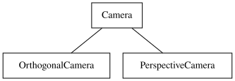
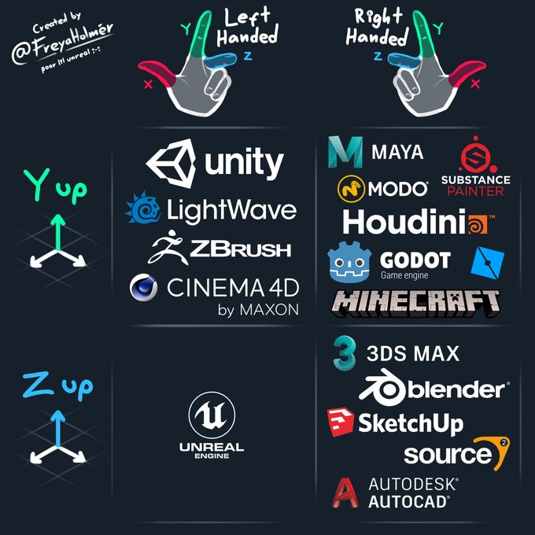
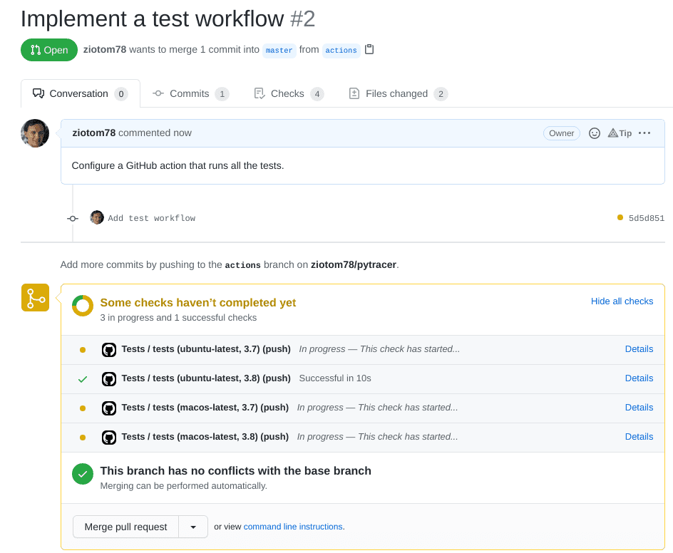
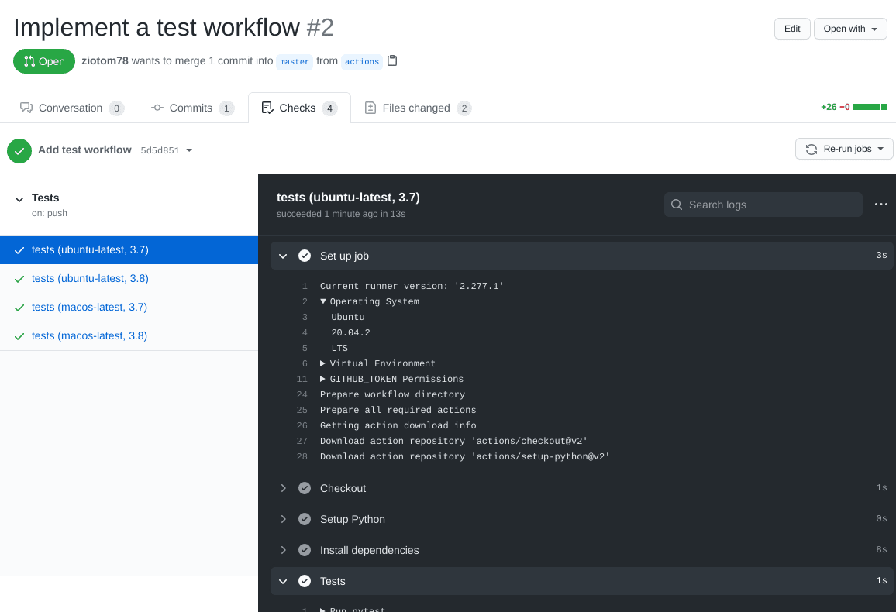
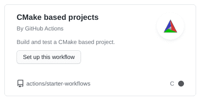
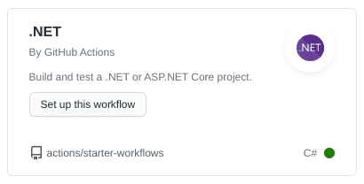
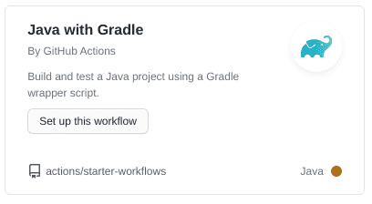

Calcolo numerico per la generazione di immagini fotorealistiche
Maurizio Tomasi maurizio.tomasi@unimi.it
Today we will implement three very simple types:
Ray type represents a ray of light;Camera type represents the observer/camera;ImageTracer type sends rays from the observer to
the screen.The Ray type must be very efficient, so it is better
if it is a value type like Color,
Vec, etc. (see lesson
02b).
The Camera and ImageTracer types are
not critical, and do not need to be particularly optimized.
As usual, you can refer to the pytracer repository for a Python implementation (but do not implement the tests in the way used there!).
Ray classIt must contain the following fields:
origin: object of type Point (origin of
the ray);dir: object of type Vec (direction of the
ray);tmin: floating-point number (minimum distance);tmax: floating-point number (maximum distance);depth: integer.You can make the last three fields have default values of
tmin = 1e-5, tmax = +∞,
depth = 0.
Define an at method that calculates a point along
the ray for a given t, and an
is_close method that checks if two rays have similar
origin and dir.
Rayfrom math import inf
@dataclass
class Ray:
origin: Point = Point()
dir: Vec = Vec()
tmin: float = 1e-5
tmax: float = inf
depth: int = 0
def is_close(self, other: Ray, epsilon=1e-5) -> bool:
return (self.origin.is_close(other.origin, epsilon=epsilon) and
self.dir.is_close(other.dir, epsilon=epsilon))
def at(self, t: float) -> Point:
return self.origin + self.dir * tRayclass TestRays(unittest.TestCase):
def test_is_close(self):
ray1 = Ray(origin=Point(1.0, 2.0, 3.0), dir=Vec(5.0, 4.0, -1.0))
ray2 = Ray(origin=Point(1.0, 2.0, 3.0), dir=Vec(5.0, 4.0, -1.0))
ray3 = Ray(origin=Point(5.0, 1.0, 4.0), dir=Vec(3.0, 9.0, 4.0))
assert ray1.is_close(ray2)
assert not ray1.is_close(ray3)
def test_at(self):
ray = Ray(origin=Point(1.0, 2.0, 4.0), dir=Vec(4.0, 2.0, 1.0))
assert ray.at(0.0).is_close(ray.origin)
assert ray.at(1.0).is_close(Point(5.0, 4.0, 5.0))
assert ray.at(2.0).is_close(Point(9.0, 6.0, 6.0))We want to implement two kinds of projections in our code:
This is a good opportunity to implement polymorphism, that is, the ability to have a single function name correspond to different implementations depending on the type of the object.
The simplest (but perhaps unexpected!) example of polymorphism is overloading:
The function print takes two forms
depending on whether the argument is an integer or a floating-point
number.
The decision of which call to use is made by the compiler at compile time.
We could then use overloading to implement the two projections (orthogonal and perspective):
But what type do we establish for the variable cam?
OrthogonalCamera or
PerspectiveCamera?
OOP allows us to avoid this mess by introducing a
third type in addition to OrthogonalCamera
or PerspectiveCamera, as shown in this C++ code:
struct Camera { virtual void fire_ray(...) = 0; };
struct OrthogonalCamera : public Camera { void fire_ray(...) override; };
struct PerspectiveCamera : public Camera { void fire_ray(...) override; };
int main() {
std::string kind_of_camera = input_camera();
Camera * camera = (kind_of_camera == "orthogonal") ?
new OrthogonalCamera() : new PerspectiveCamera();
// ...
}But OOP is not the only way to achieve dynamic polymorphism, because you can also use procedural polymorphism. Here is an example in C++:
using FireRayProc = void(Type1 arg1, Type2 arg2);
void fire_ray_orthogonal(Type1 arg1, Type2 arg2);
void fire_ray_perspective(Type1 arg1, Type2 arg2);
void fire_all_rays(FireRayProc fire_ray) {
// Use `fire_ray(arg1, arg2)` whenever appropriate
}
int main() {
std::string kind_of_camera = input_camera();
FireRayProc * proc = (kind_of_camera == "orthogonal") ?
&fire_ray_orthogonal : &fire_ray_perspective;
// Dynamic polymorphic call!
fire_all_rays(proc);
}In summary, there are two types of polymorphism:
Static polymorphism (i.e., at compile time): this is the case of overloading.
Dynamic polymorphism: this is the case of class hierarchies.
Today we will need dynamic polymorphism for cameras. You can implement either using OOP constructs (suitable for languages like Java and Kotlin) or using procedural programming.
A very common case is when the base class is just a workaround to have a base type, but all methods are pure virtual (abstract).
Some modern languages offer lighter mechanisms called interfaces (Go, C#) or traits (Rust). An interface is the analogue of a class where all methods are empty; here is an example in Go:
*Camera classesIf you want to use an OOP approach, Camera will be
the type from which the new types OrthogonalCamera and
PerspectiveCamera are derived.
The idea is precisely to implement the type hierarchy we have seen:

Use whatever your language allows to implement polymorphism: class hierarchy in C#/D/Java/Kotlin, traits in Rust, etc.

Tweet by Freya Holmér, cited in Translating a Fortran F-16 Simulator to Unity3D (vazgriz)
P = (-d, 0, 0),\ \vec d = (d, 0, 0),\ \vec u = (0, 0, 1), \vec r = (0, -a, 0).
CameraThe only adjustable parameters of Camera are
d (screen-observer distance) and a (image
aspect ratio).
The reference system of the previous slide is rigid: it is therefore very easy to implement because there is no need to store the vectors \vec d, \vec u and \vec v.
To orient a Camera, we can use the
Transformation type that we implemented last week.
It must be possible to invoke a fire_ray method on
objects of type *Camera that accepts a coordinate (u, v) as input and returns a
Ray object.
If we associate a transformation T to the observer, we could apply it to the points/vectors that define the observer, namely P, \vec d, \vec u and \vec r, and move/orient the observer.
But this makes it complicated to calculate the directions of the
rays that pass through the screen in the fire_ray
function!
It is better to create the rays in the original reference system, and then apply the transformation to the ray: it is simpler and requires fewer calculations.
Therefore, we need to implement the
Transformation * Ray operator, which will apply the
transformation T to both O (origin) and \vec
d (ray direction).
RayThis is the application of a transformation to a ray; you could
alternatively redefine the * operator in the
Transform * Ray case:
It is not necessary to transform tmin and
tmax.
transformdef test_transform():
ray = Ray(origin=Point(1.0, 2.0, 3.0), dir=Vec(6.0, 5.0, 4.0))
transformation = translation(Vec(10.0, 11.0, 12.0)) * rotation_x(90.0)
transformed = ray.transform(transformation)
assert transformed.origin.is_close(Point(11.0, 8.0, 14.0))
assert transformed.dir.is_close(Vec(6.0, -4.0, 5.0))To avoid confusion between spatial coordinates (x, y, z) and 2D screen coordinates, we will use the letters (u, v) to indicate screen points:
For example, a ray fired towards (u, v) = (0, 1) must pass through the point P + \vec d - \vec r + \vec u.
OrthogonalCameraTo construct it, you need the aspect_ratio parameter
(a floating point number, or a rational like 16//9 in
Julia) and transformation.
This is a possible implementation in Python:
class OrthogonalCamera(Camera):
def __init__(self, aspect_ratio=1.0, transformation=Transformation()):
self.aspect_ratio = aspect_ratio
self.transformation = transformation
def fire_ray(self, u: float, v: float) -> Ray:
origin = Point(-1.0, (1.0 - 2 * u) * self.aspect_ratio, 2 * v - 1)
direction = VEC_X
return Ray(origin=origin, dir=direction, tmin=1.0e-5).transform(self.transformation)It is important to verify that the four corners of the image are projected correctly. We also choose an aspect ratio different from 1.
For OrthogonalCamera we verify that the rays are
parallel to each other: we do this by calculating their dot product and
verifying that it coincides with the null vector.
(For PerspectiveCamera we will instead verify that
all rays have the same origin).
OrthogonalCameradef test_orthogonal_camera(self):
cam = OrthogonalCamera(aspect_ratio=2.0)
ray1 = cam.fire_ray(0.0, 0.0)
ray2 = cam.fire_ray(1.0, 0.0)
ray3 = cam.fire_ray(0.0, 1.0)
ray4 = cam.fire_ray(1.0, 1.0)
# Verify that the rays are parallel by verifying that cross-products vanish
assert are_close(0.0, ray1.dir.cross(ray2.dir).squared_norm())
assert are_close(0.0, ray1.dir.cross(ray3.dir).squared_norm())
assert are_close(0.0, ray1.dir.cross(ray4.dir).squared_norm())
# Verify that the ray hitting the corners have the right coordinates
assert ray1.at(1.0).is_close(Point(0.0, 2.0, -1.0))
assert ray2.at(1.0).is_close(Point(0.0, -2.0, -1.0))
assert ray3.at(1.0).is_close(Point(0.0, 2.0, 1.0))
assert ray4.at(1.0).is_close(Point(0.0, -2.0, 1.0))Let’s verify the correctness of transformations when applied to cameras:
Things are similar for PerspectiveCamera.
PerspectiveCameraApart from the aspect ratio and the transformation, perspective projections require the distance d between the screen and the observer.
This is a possible implementation in Python:
class PerspectiveCamera(Camera):
def __init__(self, distance=1.0, aspect_ratio=1.0, transformation=Transformation()):
self.distance = distance
self.aspect_ratio = aspect_ratio
self.transformation = transformation
def fire_ray(self, u: float, v: float) -> Ray:
origin = Point(-self.distance, 0.0, 0.0)
direction = Vec(self.distance, (1.0 - 2 * u) * self.aspect_ratio, 2 * v - 1)
return Ray(origin=origin, dir=direction, tmin=1.0e-5).transform(self.transformation)PerspectiveCameradef test_perspective_camera(self):
cam = PerspectiveCamera(screen_distance=1.0, aspect_ratio=2.0)
ray1 = cam.fire_ray(0.0, 0.0)
ray2 = cam.fire_ray(1.0, 0.0)
ray3 = cam.fire_ray(0.0, 1.0)
ray4 = cam.fire_ray(1.0, 1.0)
# Verify that all the rays depart from the same point
assert ray1.origin.is_close(ray2.origin)
assert ray1.origin.is_close(ray3.origin)
assert ray1.origin.is_close(ray4.origin)
# Verify that the ray hitting the corners have the right coordinates
assert ray1.at(1.0).is_close(Point(0.0, 2.0, -1.0))
assert ray2.at(1.0).is_close(Point(0.0, -2.0, -1.0))
assert ray3.at(1.0).is_close(Point(0.0, 2.0, 1.0))
assert ray4.at(1.0).is_close(Point(0.0, -2.0, 1.0))ImageTracerWe are now missing the last piece: a functionality that links the
HdrImage type to one of the types derived from
Camera.
The new ImageTracer type will be responsible for
sending rays to the corresponding pixels in an image, converting between
the pixel index (column, row) used by HdrImage
and the (u, v) values used by Camera.
For convenience, we define two functions associated with
ImageTracer:
fire_ray function that sends a ray towards a
specified pixel;fire_all_rays function that iterates over all the
pixels of the image calling fire_ray.fire_rayThe fire_ray function must send a ray towards a
pixel in the image.
Apart from converting the coordinates from the
(u, v) space to the pixel space, there is the problem of
the pixel’s surface.
A pixel is not in fact a point, because it has a certain area: at which point inside the pixel should the ray pass?
For the moment we will make the ray pass through the center of
the pixel, but let’s make it possible to specify a relative
position through two coordinates (u_pixel, v_pixel),
similar to the (u, v) coordinates but referring to the
pixel surface instead of the image.
fire_all_raysOnce a ray has been “cast” towards a pixel, the
fire_all_rays function should calculate the solution to the
rendering equation.
We will implement multiple solution methods, some accurate but slow and others coarse but very fast: therefore polymorphism can be used here as well.
For the moment I recommend you use a procedural approach:
fire_all_rays accepts as an argument a
function that is invoked for each pixel/ray of the
image and returns a Color object.
ImageTracer in Pythonclass ImageTracer:
def __init__(self, image: HdrImage, camera: Camera):
self.image = image
self.camera = camera
def fire_ray(self, col: int, row: int, u_pixel=0.5, v_pixel=0.5) -> Ray:
# There is an error in this formula, but implement it as is anyway!
u = (col + u_pixel) / (self.image.width - 1)
v = (row + v_pixel) / (self.image.height - 1)
return self.camera.fire_ray(u, v)
def fire_all_rays(self, func) -> None:
for row in range(self.image.height):
for col in range(self.image.width):
ray = self.fire_ray(col, row)
color = func(ray)
self.image.set_pixel(col, row, color)ImageTracerdef test_image_tracer(self):
image = HdrImage(width=4, height=2)
camera = PerspectiveCamera(aspect_ratio=2)
tracer = ImageTracer(image=image, camera=camera)
ray1 = tracer.fire_ray(0, 0, u_pixel=2.5, v_pixel=1.5)
ray2 = tracer.fire_ray(2, 1, u_pixel=0.5, v_pixel=0.5)
assert ray1.is_close(ray2)
tracer.fire_all_rays(lambda ray: Color(1.0, 2.0, 3.0))
for row in range(image.height):
for col in range(image.width):
assert image.get_pixel(col, row) == Color(1.0, 2.0, 3.0)When managing pull requests, it is necessary to be sure that the change does not worsen the code.
A basic requirement is that all tests continue to pass once the pull request is merged.
GitHub allows you to automatically verify this requirement, using Continuous Integration builds (which GitHub calls GitHub actions).
It is a term that indicates a working method in which
improvements and code changes are incorporated as soon as possible into
the master branch.
Before they can be incorporated, it is necessary to be 100% sure of their quality!
A CI build consists of creating a virtual machine on which a «clean» operating system is installed and on which the code is installed, compiled, and the tests are run.
At the end of the test execution, the virtual machine is deleted; if the CI build is run again, everything starts over.
They install the code on a virtual machine: it’s harder to mess things up.
The virtual machine is always created from scratch: it’s easier
to discover the code’s dependencies. (Example: which version of the C++
compiler was installed? Was the libgd library
installed?)
You can create multiple virtual machines with different operating systems (Linux, Windows, Mac OS X…): the code is verified on each of them.
CI builds can be run automatically by GitHub every time a pull request is opened, every time a commit is made, etc.
A CI build can be created and executed in GitHub using GitHub Actions, a service that includes several possibilities that go beyond simple CI builds.
To activate a CI build, it is sufficient to create a hidden
directory .github/workflows in your repository, containing
a text file in YAML
format, which contains this information:
GitHub Actions has a «marketplace» that allows you to automatically configure a CI build with a few mouse clicks, depending on the language you use.
Pre-configured actions are available for many languages and development environments.
It’s not a problem if you don’t find an action that suits your needs: it’s quite simple to create new custom actions, once you understand how to describe them.


Run linters like ruff check for Python or CSA for C++.
Make the job fail if the code is not formatted properly, if you use an tools like ruff format (Python), clang-format (C++), etc.
Publish your User’s manual (including docstrings!) using sites like ReadTheDocs, Sphinx, MkDocs, Jupyter Book, etc.
Generate ready-to-download executables (so the user is not forced to install a C++/Nim/Rust/… compiler)
Do not add too many tasks: free CI build time is limited!
The only requirement for this course is that you run the tests!
Create a branch for today’s work, which you will call
cameras.
Implement these types:
Ray;Camera, OrthogonalCamera, and
PerspectiveCamera;ImageTracer.Implement all the tests. When you have finished the implementation and the tests pass successfully, close the PR.
Add a workflow to your GitHub repository that (1) downloads the code, (2) compiles it, and (3) runs the tests.
C++ supports both virtual functions (OOP polymorphism) or functional polymorphism
Given that it’s likely you already learned how to use
virtual methods in C++, I suggest you try procedural
polymorphism today
But if you feel it’s better to use OOP, go on! The two approaches boil down to the same machine code, so it’s just a matter of aesthetics.
Once you have saved the code in a GitHub repository, set up a new “Action” (see the following video).
The template is “CMake based projects” (ignore the fact that it seems to only support the C language):

C# is a OOP language, so it’s better to stick with virtual methods
However, C# supports interfaces, so you should definitely try them!
Remember that in C# there is the convention that interfaces begin
with a capital I. So, instead of using the name
Camera, use ICamera.
Add an Action to the GitHub repository, once you have committed
and executed git push.
The template is «.NET» (avoid the «.NET desktop» template, we need the one for programs that work from the command line):

Julia makes heavy use of multiple dispatch, so use it!
You should define an abstract
type Camera and then implement the two types
OrthogonalCamera and PerspectiveCamera as a
hierarchy
Implement the function fire_ray twice:
function fire_ray(cam::OrthogonalCamera, …) … end
function fire_ray(cam::PerspectiveCamera, …) … endWhen using multiple dispatch, you must define the type of
the cam parameter, so that Julia can distinguish between
the two implementation.
julia-actions/setup-julia@v2 to set up the Julia
compiler;julia-actions/julia-buildpkg@v1 to build the
package;julia-actions/julia-runtest@v1 to run the tests.Whether you use Java or Kotlin, select «Java with Gradle»:

If you use Kotlin, Gradle will automatically download what is needed to support it.
The process will try to compile the code and run all the tests in the repository
Remember to add the files in gradle/wrapper/ to the
commit
If you have problems in Kotlin due to the Gradle version,
regenerate gradlew from the command line like this:
(Keep in mind that Gradle supports Kotlin only starting from version 5.3).
For D, you can use setup-dlang
For Nim, there is Setup Nim Environment